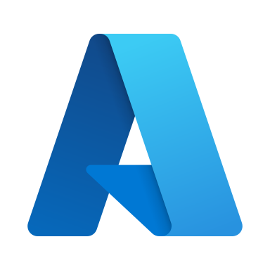

Azure DevOps Engineer
Secure, multi-tenant CI/CD & Infrastructure-as-Code on Azure.
- Multi-stage Azure Pipelines with release gates & SAST
- Bicep / Terraform IaC module library — 80% faster setup
- AKS, Docker, Helm & KEDA container orchestration
- Hub-and-spoke VNet, Private Endpoints, Private DNS